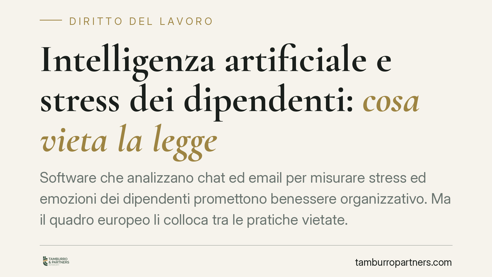

Intelligenza artificiale e stress dei dipendenti: cosa vieta la legge
Software che analizzano chat ed email per misurare stress ed emozioni dei dipendenti promettono benessere organizzativo. Ma il quadro europeo li colloca tra le pratiche vietate. L'AI Act proibisce il riconoscimento delle emozioni sul luogo di lavoro, e il divieto è assoluto: prescinde dal consenso e dagli accordi sindacali. Un terreno delicato dove la buona intenzione non salva lo strumento.

Il caso e il contesto
Si diffondono sul mercato sistemi di intelligenza artificiale che analizzano le comunicazioni interne — chat, email, messaggistica aziendale — per inferire lo stato emotivo dei lavoratori: livelli di stress, frustrazione, rischio di burnout. L'obiettivo dichiarato è il benessere organizzativo. Il problema è che la finalità benefica non rende lecito lo strumento.
La questione è tornata di attualità con l'attenzione del Garante per la protezione dei dati personali verso queste tecnologie. Segnaliamo per correttezza che eventuali provvedimenti specifici del Garante su singole aziende vanno verificati nelle fonti ufficiali (Registro dei provvedimenti su garanteprivacy.it) prima di essere assunti come precedenti: in questa sede ci limitiamo al quadro normativo consolidato, che è di per sé sufficiente a orientare le scelte aziendali.
Inquadramento normativo
Il riferimento cardine è il Regolamento UE 2024/1689 (AI Act). L'art. 5, par. 1, lett. f) vieta l'immissione sul mercato e l'uso di sistemi di IA finalizzati a dedurre le emozioni di una persona nell'ambito del luogo di lavoro e degli istituti di istruzione, salve limitate eccezioni per ragioni mediche o di sicurezza. Si tratta di una pratica classificata come rischio inaccettabile: non è un'attività soggetta a condizioni o salvaguardie, ma vietata in radice.
Un dato pratico spesso trascurato: i divieti dell'art. 5 si applicano dal 2 febbraio 2025. Non si tratta quindi di un orizzonte futuro, ma di una regola già operativa.
Sul piano interno, lo Statuto dei lavoratori (L. 300/1970) fornisce una cornice coerente. L'art. 4 disciplina gli strumenti dai quali può derivare un controllo a distanza dell'attività, subordinandone l'impiego ad accordo sindacale o autorizzazione amministrativa. L'art. 8 vieta indagini sulle opinioni e sui fatti non rilevanti ai fini della valutazione dell'attitudine professionale. L'art. 113 del Codice Privacy (D.Lgs. 196/2003) richiama proprio queste disposizioni in materia di raccolta dati e controlli, mantenendole in vigore come norme speciali di settore anche dopo la riforma del 2018.
Perché il consenso non salva lo strumento
È qui che molte aziende sbagliano impostazione. Due piani vanno tenuti distinti.
Sul piano della protezione dei dati, il consenso del lavoratore è una base giuridica strutturalmente fragile: nel rapporto di lavoro manca la libertà effettiva della scelta, per l'asimmetria di potere tra le parti (considerando 43 GDPR e orientamento dell'EDPB). Un consenso "estorto" dal timore di conseguenze non è valido.
Ma nel caso dell'emotion recognition il discorso è più netto. Il divieto dell'AI Act opera a monte: lo strumento è vietato in sé. Non esiste consenso individuale, né accordo sindacale ex art. 4 dello Statuto, né autorizzazione dell'Ispettorato del lavoro che possano renderlo legittimo. Dove la norma europea pone un divieto assoluto, le procedure di legittimazione dei controlli non entrano nemmeno in gioco.
Implicazioni pratiche
Per il datore di lavoro il messaggio è diretto: distinguere la finalità dallo strumento. Promuovere il benessere dei dipendenti è un obiettivo legittimo; farlo tramite sistemi che inferiscono emozioni dalle comunicazioni è una pratica vietata.
Il rischio non è solo sanzionatorio sul fronte privacy (le sanzioni dell'AI Act per le pratiche vietate sono tra le più severe dell'impianto). Vi è anche un profilo lavoristico: dati raccolti in violazione dello Statuto sono inutilizzabili, e l'attività può integrare un controllo illegittimo con ricadute sui provvedimenti disciplinari eventualmente fondati su quelle informazioni.
Cosa fare in concreto
- Mappate i software già in uso e in fase di valutazione: individuate ogni funzione che analizzi comunicazioni per dedurre stati emotivi, umore o stress, anche quando presentata come "analisi del clima".
- Sospendete immediatamente l'uso di sistemi riconducibili all'emotion recognition in ambito lavorativo: il divieto è già operativo e non è sanabile con accorgimenti.
- Rivedete i contratti con i fornitori di software HR e di collaboration, verificando le clausole sulle funzionalità basate su IA e le garanzie di conformità all'AI Act.
- Aggiornate informative privacy, valutazioni d'impatto (DPIA) e, dove rilevante, gli accordi ex art. 4 Statuto, eliminando ogni riferimento ad analisi emotive.
- È opportuno coinvolgere il Responsabile della protezione dei dati nella revisione degli strumenti e nel confronto con le rappresentanze sindacali, prima dell'adozione di qualsiasi tecnologia di monitoraggio.
Il perimetro del lecito, in questa materia, si misura prima sullo strumento e solo dopo sulle procedure. Investire su strumenti che non inferiscono emozioni — misurando, ad esempio, carichi di lavoro oggettivi — resta una strada percorribile.
---
*Contributo informativo a cura di Tamburro & Partners - Avv. Giuseppe Tamburro. Non costituisce parere legale.*
Ogni storia di lavoro ha i suoi tempi.
Se gestisci HR e vuoi un confronto su contenzioso, ispezioni o licenziamenti, scrivi allo studio. Ti rispondiamo entro un giorno lavorativo.